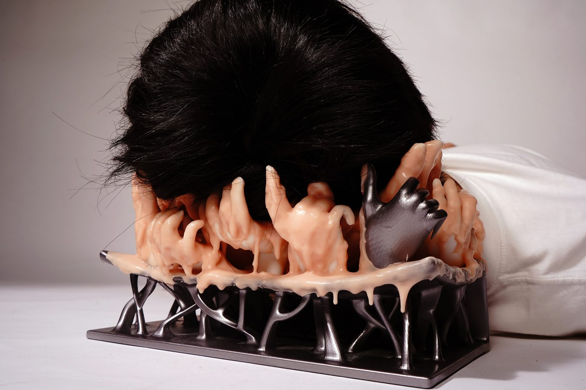
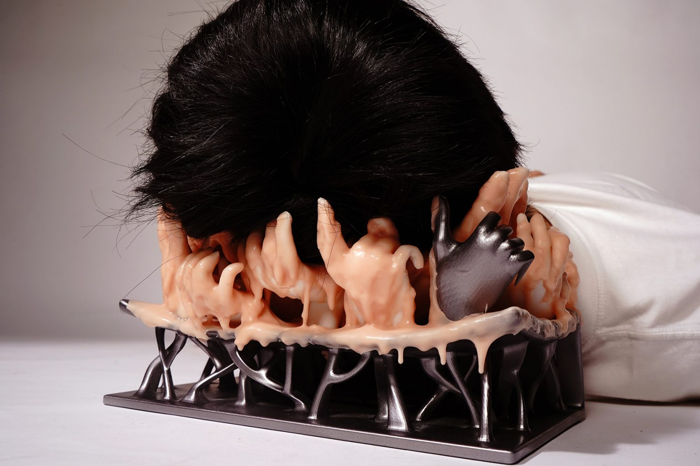
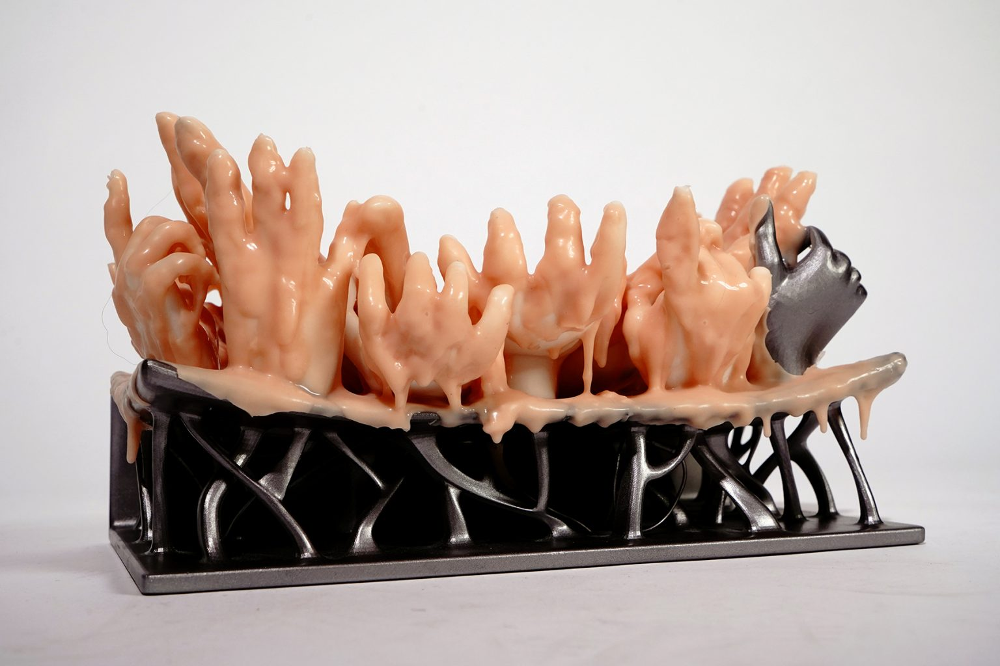

Key words
3D Modeling, 3D Printing, Digital Crafting, Interactive Installation, Arduino
 

Pillows in the modern days have long been associated with comfort, relaxation, and even health care. They are designed to maximize their functions of comforting people during sleeping, with a number of complicated
ergonomic estimations.
Comparing the headrest from the Song dynasty and the pillows we use today, it’s not difficult to find that there are essential differences in what people actually take them as. The headrests from ancient China were often made of hard,
cold ceramics or wood, and the sophisticated patterns on their surfaces indicate its aesthetic value and the owners’ social status, apart from its functions.
Yet, what is the boundary of a “pillow”, physically and functionally? Does a pillow have to comfort its users? What do people expect more from a pillow than a “headrest”? For example, can it “record” and visualize the sleeping quality of
the user, or can it help people who suffer from insomnia fall asleep more easily?

We did notice that the pillow has some specialities that other daily used objects don’t:
Short distance (i.e. intimacy): people get tightly close to the surface of the pillow when putting their heads on it, making it possible for them to
perceive tiny signals and messages (sound/smell/…) that come from the pillow itself;
Long time & long-term: most people keep close contact with their pillows for quite a long time every day, and use the same pillow for plenty of months or
years.
Through these, special relationships can be built between the user and the pillow.

Those led us to think of Animism, which is the belief that objects, places, and creatures all possess a distinct spiritual essence. While the terminology was developed in the late 19th century, this idea of “perceiving all things as
animated and alive” can be found in the ancient cultures around the world, and is one of the earliest, if not the first, concept in anthropology.
It is very interesting to think about how we can combine these ideas and reflect back to the headrest from the University Museum Art Gallery. And overall, the target and core concept of our project is to question that, can we make a
pillow that pleases and disturbs its user at the same time?
So, this is a pillow with the shape like a strange creature; it’s half-bio half-machine, with reference to the T-800; it has tattoos derive from classic Chinese erotica art under it’s skin; and it will make strange sounds when you
put your head on it.
In other words, it is alive, and it seems to be concerned about the fertility rate of human being.